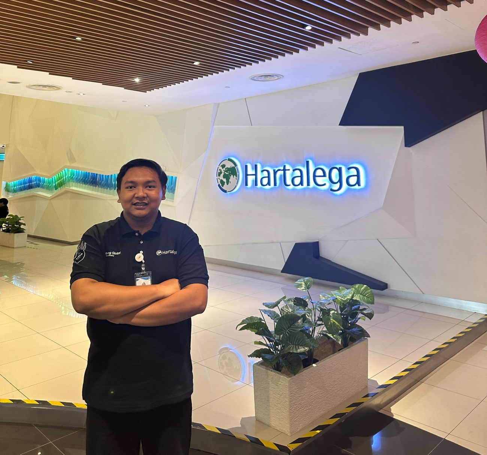

Six months in Quality Assurance at Hartalega, told one week at a time. The first project studies the GTM glove tester, and more projects come in the second half. Every chapter is written from my daily logbook.

Each block is one week. Tap a blue one to read it.
Short stories written from each week's log, with the raw entries kept underneath.
The four kinds of work that keep coming back in the log.
Pressure-drop (dP) runs on Qmax and GTM machines across inflation times, auto and static tests.
Extracting data by line and by tier, 1-proportion tests, defect percentages and control limits in DMS.
Burned, medical and sewing needles to copy real micropinholes, checked under a Dino-Lite microscope.
Writing test protocols and helping the QA validation team through IQ and OQ for the GTM machine.